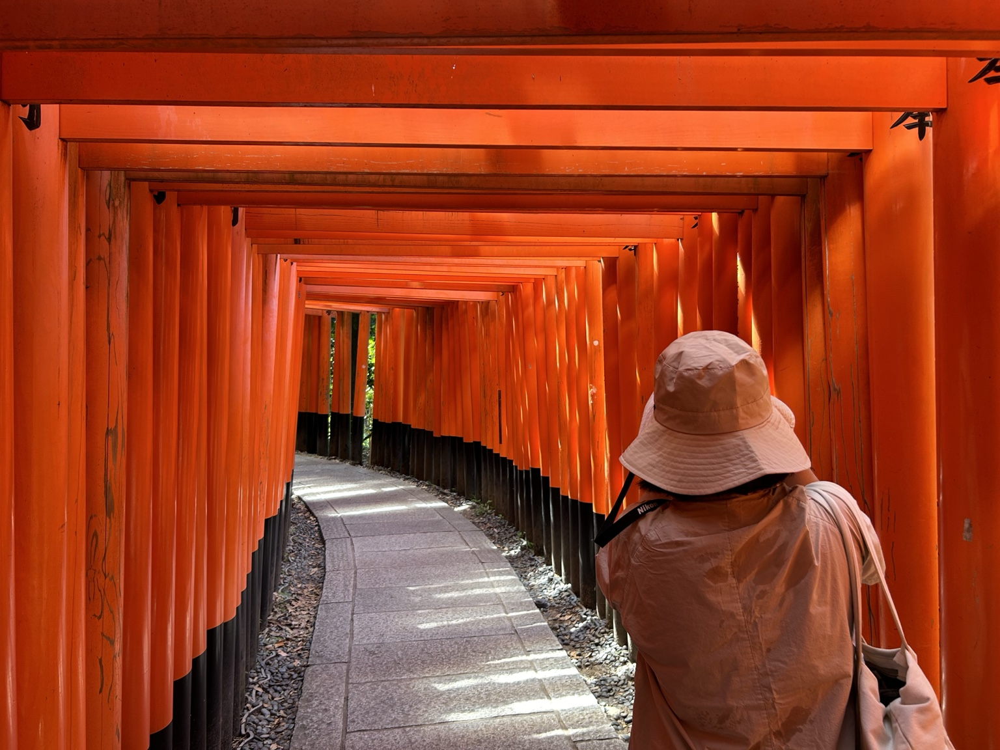

How people live shapes how I think about cities.
I’m Rujie, a recent City Planning graduate from Penn. I’m interested in the everyday life of cities: how people get around, where they spend time, and what makes a place feel like home. My work brings together GIS, transportation analysis, and visual communication to connect those questions with planning decisions.
🏙️ 🚌 🚊 🚲 🗺️ 🚶🏻♀️ 🏃🏻♀️ 👨🦽 🧑🦯 🚴 🛵 🚃
